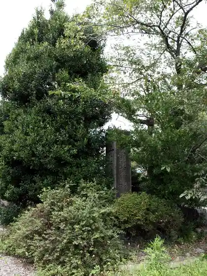
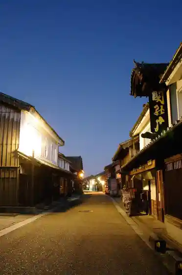
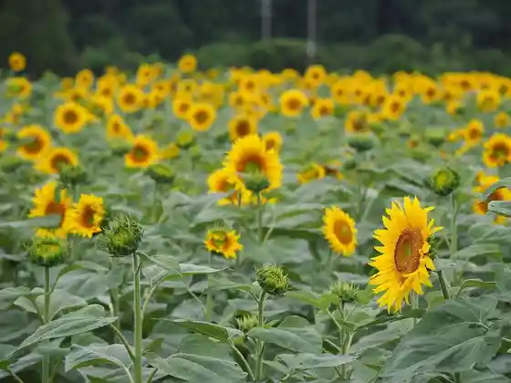
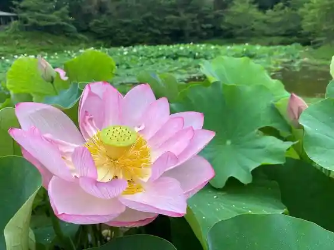

Nishi no Oiwake
Kameyama, Mie · 0595-96-1218 · Official / source link

Tokaido Sekiyado
Kameyama, Mie · 0595-97-8877 · Official / source link

JR Kan Eki Kara Mie Ruhimawari Hatake
Kameyama, Mie · 0595-97-8877 · Official / source link

Jimoto no Kakure Ta Ikoi no Ba (Anamushi no Sato)
Kameyama, Mie · 090-2342-3945 · Official / source link

Kameyama Park Shobu Sono
Kameyama, Mie · 0595-83-1385 · Official / source link
Kameyama History Museum
Kameyama, Mie · 0595-83-3000 · Official / source link
Yamatotakeru Mikoto Nobono O Haka
Kameyama, Mie · 0595-96-1218 · Official / source link
Kameyama Sanshain Park
Kameyama, Mie · 0595-83-0339 · Official / source link
Kameyama Ishi Mizu Kei Campground
Kameyama, Mie · 0595-85-2800 · Official / source link
Sengagaku
Kameyama, Mie · 059-371-0029 · Official / source link
Kameyamarosokutaun
Kameyama, Mie · 0595-82-6009 · Official / source link
Kameyama Kan Town no Kosumosu
Kameyama, Mie · 0595-97-8877 · Official / source link
Ta Gan Tera
Kameyama, Mie · 0595-82-0824 · Official / source link
Sekiyado Hatago Tamaya History Museum
Kameyama, Mie · 0595-96-0468 · Official / source link
Kameyama Park Kameyama Park Wanpaku Plaza (2024 Nen 3 Gatsu 29 Nichi Rinyuaruopun)
Kameyama, Mie · 0595-83-1385 · Official / source link
So Suzu Gorufu Club Kan Kosu
Kameyama, Mie · 0595-98-0500 · Official / source link
Shakujogagaku
Kameyama, Mie · 0595-84-5074 · Official / source link
Hyaku Roku Sato Niwa Cho Kan Tei
Kameyama, Mie · 0595-84-5074 · Official / source link
Sho Man Baths (Ashiyu)
Kameyama, Mie · 0595-84-5074 · Official / source link
Roadside Station Sekiyado
Kameyama, Mie · 0595-97-8200 · Official / source link
Kameyama Satoyama Park (Michikusa)
Kameyama, Mie · 090-2578-5068 · Official / source link
Kabuto no Mori Terasu
Kameyama, Mie · 0595-98-0605 · Official / source link
Kan no Dashi Hall
Kameyama, Mie · 0595-96-1103 · Official / source link
Kan Machinami Museum
Kameyama, Mie · 0595-96-2404 · Official / source link
Asahi Yo Yama Makoto Zen Tera
Kameyama, Mie · 0595-82-8188 · Official / source link
Kameyama Castle Ruins
Kameyama, Mie · 0595-96-1218 · Official / source link
Higashimeihan Jidoshado (Kameyama Parking Area) Nobori Sen
Kameyama, Mie · 0595-82-7660 · Official / source link
Higashimeihan Jidoshado (Kameyama Parking Area) Kudari Sen
Kameyama, Mie · 0595-82-3631 · Official / source link
Kyu Kameyama Shiro Tabun Yagura
Kameyama, Mie · 0595-96-1218 · Official / source link
Kan Jizo In
Kameyama, Mie · 0595-96-0018 · Official / source link
Higashi no Oiwake
Kameyama, Mie · 0595-96-1218 · Official / source link
Kannon Yama Park
Kameyama, Mie · Official / source link
Kameyama 7 Za Toreiru
Kameyama, Mie · 0595-96-1215 · Official / source link
Oke Ju
Kameyama, Mie · 0595-96-2808 · Official / source link
Sakamoto no Tanada
Kameyama, Mie · 0595-84-5082 · Official / source link
Shoboji Sanso Ato
Kameyama, Mie · 0595-96-1218 · Official / source link
no Tozan no Buna Hayashi
Kameyama, Mie · 0595-96-1215 · Official / source link
Soei Tera no Icho
Kameyama, Mie · 0595-96-1218 · Official / source link
no Village Ichiri Tsuka
Kameyama, Mie · 0595-96-1218 · Official / source link
Enmei Terayama Mon (Kyu Kawakita Honjin no Mon)
Kameyama, Mie · 0595-96-1218 · Official / source link
Kato Kacho Ya Mon Oyobi Dozo (Samuraiyashiki Iko)
Kameyama, Mie · 0595-96-1218 · Official / source link
Sakashita Yado
Kameyama, Mie · 0595-96-1218 · Official / source link
Ishii Kyodai Adauchi no Hi
Kameyama, Mie · 0595-96-1218 · Official / source link
Kawakita Ito Honjin Ato
Kameyama, Mie · 0595-96-1218 · Official / source link
Suzuka Toge Nature no Ie
Kameyama, Mie · 0595-84-5057 · Official / source link
Kan Shrine
Kameyama, Mie · 0595-96-0683 · Official / source link
Suzuka Magota Hall
Kameyama, Mie · 0595-96-2001 · Official / source link
Haguro Yama
Kameyama, Mie · Official / source link
Kada Fudo Taki
Kameyama, Mie · Official / source link
no to Tera
Kameyama, Mie · 0595-85-0729 · Official / source link